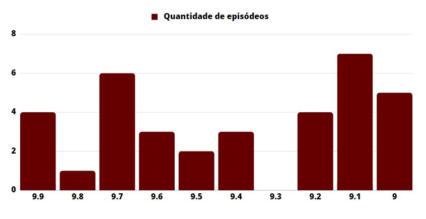
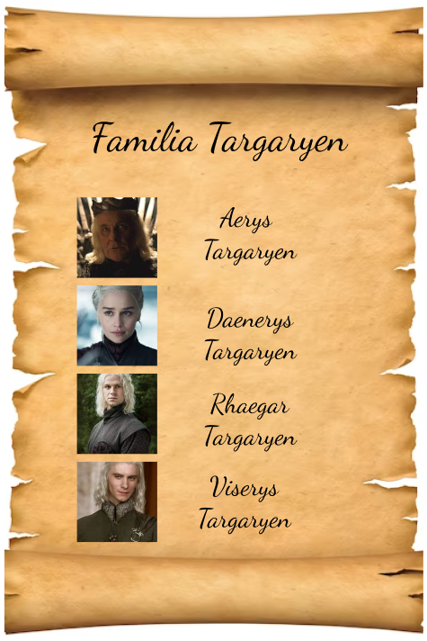
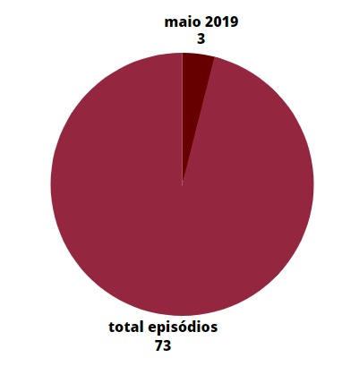
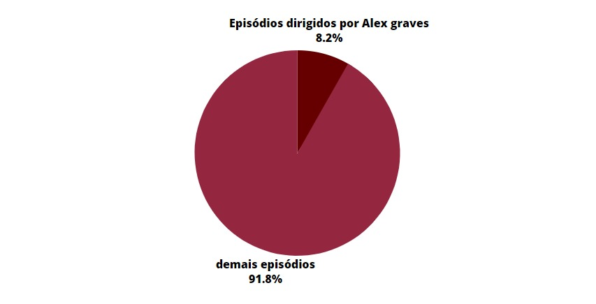
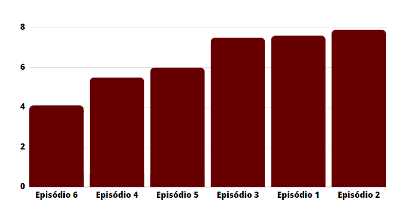

PROJETO EM GRUPO - Módulo 4 - Visualizando a situação
A partir da análise de um banco de dados da série televisiva Game of Thrones, nosso squad desenvolveu 5 perguntas e essas foram as conclusões:
Episódios que tiveram avaliação entre 9 e 10

Nome de todos os personagens "Targaryen" que apareceram na série

Episódios que foram ao ar no mês de Maio de 2019

Episódios que foram dirigidos por Alex Graves

Episódio da última temporada que teve a pior avaliação
